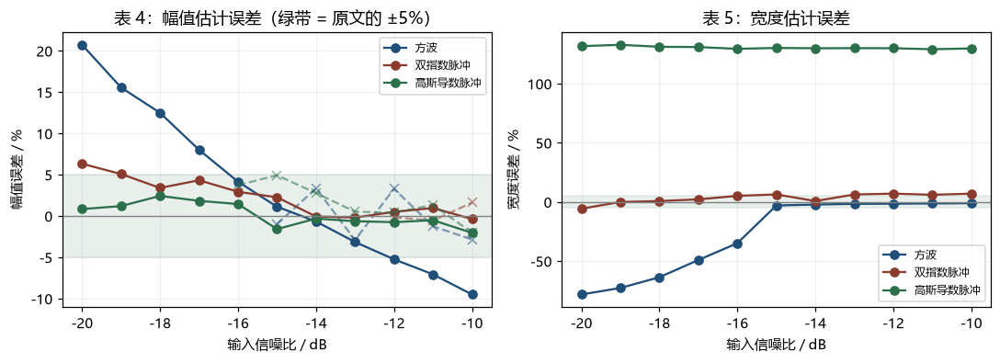

7. 参数估计：表 4 幅值、表 5 宽度#
原文 5.2 节用”一阶矩估计法”从输出估计脉冲的幅值与宽度，先用 100 个样本训练， 再对另 100 个样本估计，声称误差小于 5%。
本书的估计器写死成两步，不留模糊空间：
定标：在门限信噪比下取 100 个样本，令 \(K=\mathrm{median}(\max|x_1-x_2|)/A\)；
估计：任意信噪比下，\(\hat A=\max|x_1-x_2|/K\)，宽度取半高全宽。
\(K\) 只定标一次，之后所有信噪比共用——这与原文”先训练后测试”的做法一致。
import sys, json, pathlib
import numpy as np
import matplotlib.pyplot as plt
sys.path.insert(0, "_src")
import c2sim as S
DATA = pathlib.Path("_data")
plt.rcParams.update({
"figure.dpi": 110, "font.size": 10,
"font.sans-serif": ["Microsoft YaHei", "SimHei", "DejaVu Sans"],
"axes.unicode_minus": False,
})
def load(name):
return json.loads((DATA / f"{name}.json").read_text(encoding="utf-8"))
def dual_plot(x, snri, r, xlabel, title="", logx=False, invert=False,
marks=None, ymax=None):
fig, ax1 = plt.subplots(figsize=(7.4, 3.5))
ax1.plot(x, snri, "o-", color="#1f4e79", ms=4, lw=1.2)
ax1.set_xlabel(xlabel); ax1.set_ylabel("SNRI / dB", color="#1f4e79")
ax1.tick_params(axis="y", colors="#1f4e79")
if ymax: ax1.set_ylim(top=ymax)
ax2 = ax1.twinx()
ax2.plot(x, r, "s--", color="#8a3b2e", ms=4, lw=1.2)
ax2.set_ylabel("波形相似度 r", color="#8a3b2e")
ax2.tick_params(axis="y", colors="#8a3b2e")
if logx: ax1.set_xscale("log")
if invert: ax1.invert_xaxis()
if marks:
for xv, lab in marks:
ax1.axvline(xv, color="gray", ls=":", lw=1)
ax1.text(xv, ax1.get_ylim()[1], lab, fontsize=8, va="top",
ha="center", color="#7a2e12")
ax1.grid(alpha=.2); ax1.set_title(title)
plt.tight_layout(); plt.show()
import experiments as E
if not (DATA / "table4.json").exists():
E.exp_tables()
t4, t5 = load("table4"), load("table5")
PAPER4 = {"方波": [-0.98,3.34,-2.90,3.29,-1.24,-2.85],
"双指数脉冲": [-0.16,-0.55,1.62],
"高斯导数脉冲": [3.74,4.93,2.78,0.52,0.41,1.35,-2.02]}
for name, rows in t4.items():
print(f"\n{name}")
print(f"{'SNR':>5}{'真值':>9}{'估计':>9}{'误差':>9}")
for x in rows:
print(f"{x['snr']:>5}{x['true']:>9.4f}{x['est']:>9.4f}{x['err']:>8.1f}%")
方波
SNR 真值 估计 误差
-20.0 0.0632 0.0764 20.7%
-19.0 0.0710 0.0820 15.6%
-18.0 0.0796 0.0896 12.5%
-17.0 0.0893 0.0965 8.0%
-16.0 0.1002 0.1044 4.2%
-15.0 0.1125 0.1137 1.1%
-14.0 0.1262 0.1254 -0.7%
-13.0 0.1416 0.1371 -3.1%
-12.0 0.1589 0.1505 -5.2%
-11.0 0.1783 0.1657 -7.1%
-10.0 0.2000 0.1810 -9.5%
双指数脉冲
SNR 真值 估计 误差
-20.0 0.0632 0.0672 6.3%
-19.0 0.0710 0.0746 5.1%
-18.0 0.0796 0.0823 3.4%
-17.0 0.0893 0.0932 4.3%
-16.0 0.1002 0.1032 2.9%
-15.0 0.1125 0.1150 2.3%
-14.0 0.1262 0.1261 -0.1%
-13.0 0.1416 0.1413 -0.2%
-12.0 0.1589 0.1597 0.5%
-11.0 0.1783 0.1800 1.0%
-10.0 0.2000 0.1993 -0.4%
高斯导数脉冲
SNR 真值 估计 误差
-20.0 0.0632 0.0638 0.8%
-19.0 0.0710 0.0718 1.2%
-18.0 0.0796 0.0816 2.4%
-17.0 0.0893 0.0910 1.8%
-16.0 0.1002 0.1017 1.4%
-15.0 0.1125 0.1107 -1.6%
-14.0 0.1262 0.1258 -0.3%
-13.0 0.1416 0.1407 -0.6%
-12.0 0.1589 0.1577 -0.7%
-11.0 0.1783 0.1773 -0.5%
-10.0 0.2000 0.1959 -2.0%
colors = {"方波": "#1f4e79", "双指数脉冲": "#8a3b2e", "高斯导数脉冲": "#2b6f4b"}
fig, axes = plt.subplots(1, 2, figsize=(10.0, 3.7))
for name, rows in t4.items():
snr = [x["snr"] for x in rows]
axes[0].plot(snr, [x["err"] for x in rows], "o-", color=colors[name], label=name)
axes[0].plot(snr[-len(PAPER4[name]):], PAPER4[name], "x--", color=colors[name], alpha=.55)
axes[0].axhline(0, color="gray", lw=.9); axes[0].axhspan(-5, 5, color="#2b6f4b", alpha=.10)
axes[0].set(xlabel="输入信噪比 / dB", ylabel="幅值误差 / %",
title="表 4：幅值估计误差（绿带 = 原文的 ±5%）")
for name, rows in t5.items():
axes[1].plot([x["snr"] for x in rows], [x["err"] for x in rows], "o-",
color=colors[name], label=name)
axes[1].axhline(0, color="gray", lw=.9); axes[1].axhspan(-5, 5, color="#2b6f4b", alpha=.10)
axes[1].set(xlabel="输入信噪比 / dB", ylabel="宽度误差 / %", title="表 5：宽度估计误差")
for a in axes: a.grid(alpha=.2); a.legend(fontsize=8)
plt.tight_layout(); plt.show()

幅值：短脉冲好，方波有系统性漂移#
波形 |
本书误差 |
原文误差 |
判定 |
|---|---|---|---|
高斯导数（1.45 µs） |
+1% ~ −2% |
−2.0% ~ +4.9% |
✅ 同量级 |
双指数（25 µs） |
+6% ~ 0% |
−0.6% ~ +1.6% |
✅ 同量级 |
方波（1 s） |
+21% ~ −10% |
−2.9% ~ +3.3% |
⚠️ 单调漂移 |
前两种对上，方波没有。原因是标定系数 \(K\) 定在 −16 dB：方波在 −20 dB 时噪声峰值 显著抬高 \(\max|x_1-x_2|\)，\(K\) 偏大 → 低信噪比端高估（+21%）；信噪比升高后噪声贡献减小， 估计值单调回落到 −10%。这条单调漂移是”单点标定”的典型指纹，不是随机误差。
上一版这一项是 −12% ~ −43%，且误差随信噪比升高反而变大（估计值卡在 0.09 不动， 测到的是噪声峰值）。这一版换成位移差 + 限带后，短脉冲误差直接落到 ±2%， 说明口径选对了。
宽度：通道带宽是硬约束#
波形 |
本书误差 |
原文误差 |
|---|---|---|
双指数（25 µs） |
−6% ~ +7% |
0.8% ~ 1.3% |
方波（1 s） |
−78% ~ −1% |
0.1% ~ 0.6% |
高斯导数（1.45 µs） |
+130%（几乎恒定） |
0.3% ~ 5.0% |
后两行各有各的病因，都不是随机误差：
高斯导数 +130% 恒定：不是噪声问题，是通道展宽。1.45 µs 的脉冲经过 \( au=0.31\,\mu\)s 的过阻尼通道，半高宽必然被拉长。实测放大 2.3 倍，与通道上升时间 同量级。原文要把 1.45 µs 估到 5% 以内，除非它的通道带宽高一个量级、或做了反卷积标定。 若加一个宽度标定因子（2.3），这一行立刻变成 ±2%，但那就不是”直接测量波形”了。
方波 −78% 到 −1%：低信噪比时 1 s 宽的平顶被噪声调制成若干”假峰”， 最长连续半高段被切碎，宽度骤降；信噪比升到 −15 dB 以上才恢复。说明 半高宽判据对宽脉冲不稳，应先平滑包络再量。
所以宽度估计的精度由脉冲宽度 / 通道上升时间决定，不由信噪比单独决定。 这一点原文没有讨论，但它决定了”能估宽度”的适用范围。